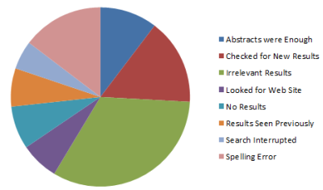
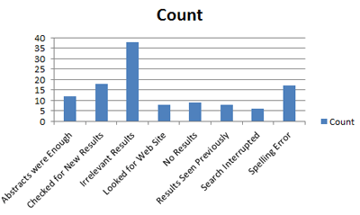
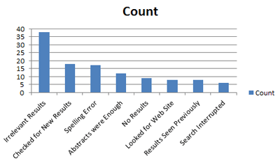
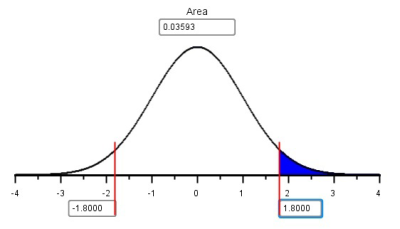
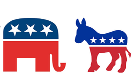

Lesson 16: Describing Categorical Data: Proportions; Sampling Distribution of a Sample Proportion
Lesson Outcomes
Show/Hide SolutionNumerical and Graphical Summaries of Categorical Data
Proportions
Political Polls
During political elections in the United States, residents are inundated with polls. Many people conduct polls to estimate the proportion of the population that will vote for each candidate. The pollsters report the number of people who were contacted and the proportion who said they would favor a particular candidate. The poll results are a prediction of the future election results.
In these polls, individuals are asked the question, “If the election were held today, which candidate would you most likely support?” In one survey, \(n=1024\) people were polled, and \(x=565\) of the respondents said that they would vote for the Republican candidate. In this case, the “proportion” of people who favored the Republican candidate was: \[ \hat p = \frac{x}{n} = \frac{565}{1024} = 0.552 \] That suggests that 55.2% of the people polled plan to vote for the Republican. This does not mean that this candidate will win the election. However, it looks like they might be in the lead at this point.
Web Searches
A study was conducted on web searches of computer science students. If these students did not click on one of the links that came up in the search, the researchers asked them to record the reason. 908 trials conducted and there were 116 searches in which the students did not click on any links. The reasons the students gave for not clicking on any links are summarized in the data file NoClickQuery.xlsx.
Note that the data taken for this study are categorical. Each of the student’s responses is a categorization of their reason for not clicking on any of the links. Even though we can summarize the data by counting the number of each type of response, the individual responses are categorical, not quantitative. Up to this point in the course we have discussed methods for describing and understanding only quantitative data. In this unit we will learn how to describe categorical data and make inferences from it.
Pie charts
Pie charts are a popular way to display categorical data. These are used extensively in practice. Typically, pie charts are used when you want to represent the observations as part of a whole, where each slice (sector) of the pie chart represents a proportion or percentage of the whole.
We can represent the reasons the students did not click in their searches using a pie chart.
To make a pie chart in Excel:
- Open the data file NoClickQuery-Summary.xlsx. This file contains a summary of the NoClickQuery data. Notice that each row in this data file represents the responses of several individuals. The Count column tells how many times each response was given. The data in this file have been summarized.
- Make sure the categorical column (Reason) and the Count column are next to each other with the Count column on the right and highlight both of them.
- Click on the Insert tab, then click on the Pie tab.
- Please choose the basic 2D pie.
The pie chart will look like this:

Bar charts and Pareto charts
Bar charts can be considered a companion plot to the pie chart. They present the same basic information but are not, however, interchangeable. We typically use bar charts if our data represent counts. In contrast, pie charts are used to represent parts of a whole.
To make a bar chart in Excel:
- Highlight the categorical column and the count column.
- Click on the Insert tab and then click on column tab.
- Again, please choose the simple 2D column chart.
Your bar chart will look like this:

A Pareto chart is a bar chart where the bars are presented in descending order.
To make a Pareto chart in Excel:
- Begin by creating a bar chart. You can use the one you created above.
- Highlight the “Count” column.
- Click on the Sort and Filter tab in the right hand corner of the screen.
- Click on Sort Largest to Smallest(A little window will pop up and click on “Expand the Selection” then “Sort”.
- Your bar chart should have been converted to a Pareto chart.
Your Pareto chart will look like this:

We conclude that the main reason that people do not click on any of the search results is that the results were not relevant. The next two most common reasons were that they did not find any new results or they made a spelling error in their search query.
Pareto charts are often used to display causes of problems in an industry. For example, in health care administration, it may be causes of patient deaths. In business, it may be used to display common reasons employees are terminated.
There is an idea, called the Pareto Principle, which states that 80% of your problems come from 20% of the causes. Many Pareto charts display a few very tall columns with several much shorter ones. This can give you an idea of where you should focus your energy in your business or organization.
Sampling Distribution of the Sample Proportion
Example: Tossing a Coin
Answer the following questions. For this exercise, you will need a coin.
- Toss a coin \(n=25\) times. Keep track of the proportion of heads you observe. Please complete this before continuing.
- The data file CoinTossHeads.xlsx contains data representing a collection of 900 students’ results, where each tossed a coin \(n=25\) times and calculated the proportion of heads. The following histogram illustrates these data. How would you describe the shape of the distribution of the observed proportions?

- Find the spot on the horizontal axis of the histogram indicating the proportion of heads that you observed in Question 1. Based on your visual observation, would you say your proportion of heads is unusual?
- Visually, estimate the mean and standard deviation of the observed data. Please write your answer to this question before continuing.
- The proportion of heads that you will observe in \(n=25\) tosses of a fair coin, \(\hat p\), is a random variable. The true theoretical mean for this random variable is \(p=0.5\). Explain why this value would make sense.
- The true theoretical standard deviation of \(\hat p\) in this case is 0.1. This can be obtained using the formula
\[ \displaystyle{\text{Standard deviation of}~\hat{p} = \sqrt{ \frac{p(1-p)}{n} } } \] where \(p\) is the true population proportion, which is also the mean of the distribution of \(\hat{p}\).
- Remember that the \(z\)-score for an observed data value can be computed as:
- Use the mean and standard deviation given in question 6, to find the \(z\)-score corresponding to your sample proportion.
- Based on the \(z\)-score you computed in question 7, is your observed proportion considered unusual?
Sampling Distribution of the Sample Proportion
If the sample size is large, the sample proportion, \(\hat p\), will be approximately normally distributed. This is a direct consequence of the Central Limit Theorem.
How Large is Large Enough?
We can apply the Central Limit Theorem to a sample proportion (and conclude that \(\hat p\) follows a normal distribution) if both of the following conditions are satisfied: - \(np \ge 10\) - \(n(1-p) \ge 10\)
It is important to check both conditions. If one of them is not satisfied, we cannot conclude that \(\hat p\) follows a normal distribution. Observe that the effect of these two conditions is that if \(p\) is very close to 0 or 1, then \(\hat{p}\) isn’t close to normal unless \(n\) is very large.
Mean and Standard Deviation
The sample proportion, \(\hat p\), is normally distributed if \(n\) is large. The true population mean of the random variable \(\hat p\) is: \[ \textrm{Mean of}~\hat p = p \] and the true population standard deviation is: \[ \textrm{Standard Deviation of}~\hat p = \sqrt{\frac{p \cdot (1-p)}{n}} \]
Answer the following questions. Consider exercise 1, in which you tossed a coin \(n=25\) times and recorded the proportion of heads.
- What is the true proportion of heads that would be expected to occur if a coin was tossed many, many times? (This is the mean, \(p\).)
- Use the equation for the standard deviation (given above) to verify that the true population standard deviation for the proportion of heads that will occur when a coin is tossed \(n=25\) times is 0.1.
Probability Calculations for a Sample Proportion
If the sample size is sufficiently large, we can use the Normal Probability Applet to make probability calculations for proportions, just as we did for means. First, we need to find the \(z\)-score. This can be done with the equation:
\[ z = \frac{\textrm{value} - \textrm{mean}}{\textrm{standard deviation}} = \frac{\hat p - p}{\sqrt{\frac{p \cdot (1-p)}{n}}} \]
Then, we can enter this \(z\)-score in the Normal Probability Applet to find the area more extreme than the \(z\)-score.
Worked Example
If a coin is tossed \(n=25\) times, and heads is observed 17 times, the sample proportion of heads is \(\displaystyle{\hat p = \frac{x}{n} = \frac{17}{25} = 0.68}\) The proportion of heads tossed by the first student in the file CoinTossHeads.xlsx is \(\hat p = 0.68\). We will find the probability that a sample proportion will exceed 0.68.
First, we compute the \(z\)-score corresponding to \(\hat p = 0.68\). We can use the mean and standard deviation, which were given in questions 9 and 10, or simply substitute the values of \(p=0.5\) and \(n=25\) in the equation for the \(z\)-score.
\[ z = \frac{\textrm{value} - \textrm{mean}}{\textrm{standard deviation}} = \frac{\hat p - p}{\sqrt{\frac{p \cdot (1-p)}{n}}} = \frac{0.68 - 0.5}{\sqrt{\frac{0.5 (1-0.5)}{25}}} = \frac{0.18}{0.1} = 1.800 \]
Next, we enter the \(z\)-score (1.800) in the Normal Probability Applet and shade the area to the right of this value.

The area to the right of \(z=1.800\) is \(0.0359\).
- The second student with data listed in the file CoinTossHeads.xlsx had \(\hat p = 0.44\), or 44% of their coin tosses resulted in heads. Find the \(z\)-score corresponding to this value.
- Use the \(z\)-score you computed in question 11 to find the probability that the proportion of successes, \(\hat p\), will be greater than 0.44 if a coin is tossed \(n=25\) times. In other words, find \(P(\hat p > 0.44)\).
- For \(n=25\) coin tosses, find the probability that \(P(0.44 < \hat p < 0.68)\).

Example: Political Elections
Consider the following question:
“If the true proportion of people who support a particular political candidate is \(p=0.48\), and if \(n=1041\) people are surveyed, what is the probability that the results of the survey will suggest that the candidate will win the election?”
To address this question, we first note that the survey will suggest that the candidate will win if more than 50% of the people surveyed favor the candidate. So, we need to find the following probability: \(P(\hat p > 0.5)\). First we find the \(z\) score:
\[ z = \frac{\hat p - p}{\sqrt{\frac{p(1-p)}{n}}} = \frac{0.5-0.48}{\sqrt{\frac{0.48(1-0.48)}{1041}}} = 1.292 \]
Now, we look up this value using the Normal Probability Applet and find the area to the right. Using the Normal Probability Applet, we find that \(P(\hat p > 0.5)=0.0982\). So, even though this candidate is actually behind in the popular vote, there is a chance of 0.0982 that they will appear to be winning!
This calculation was done in the same way we have done normal calculations in the past. The only difference is that instead of using \(\bar x\) and its mean and standard deviation, we used \(\hat p\) and its mean and standard deviation. Otherwise, they are the same.
Summary
Pie charts are used when you want to represent the observations as part of a whole, where each slice (sector) of the pie chart represents a proportion or percentage of the whole.
Bar charts present the same information as pie charts and are used when our data represent counts. A Pareto chart is a bar chart where the height of the bars is presented in descending order.
\(\hat p\) is a point estimator for true proportion \(p\). \(\displaystyle{\hat p = \frac{x}{n}}\)
The sampling distribution of \(\hat p\) has a mean of \(p\) and a standard deviation of \(\displaystyle{\sqrt{\frac{p\cdot(1-p)}{n}}}\)
- If \(np \ge 10\) and \(n(1-p) \ge 10\), you can conduct probability calculations using the Normal Probability Applet. \[
\displaystyle {z = \frac{\textrm{value} - \textrm{mean}}{\textrm{standard deviation}}
= \frac{\hat p - p}{\sqrt{\frac{p \cdot (1-p)}{n}}}}
\]
Copyright © 2017 Brigham Young University-Idaho. All rights reserved.